Inhaltsverzeichnis
1. Grundlagen und wichtige Regeln
PokeMMO behandelt Legendäre anders als die Hauptspiele. Das System ist bewusst restriktiv, damit das Meta-Balancing im MMO erhalten bleibt.
- Kein klassisches Save-Reset-Hunting.
- Roaming-Legendäre rotieren monatlich.
- KOTH-Legendäre sind temporär und an Besitzregeln gebunden.
- Ein Teil der Legendären ist an Story-, Endgame- oder Pokédex-Fortschritt gekoppelt.
2. Die fünf Kategorien
Monatsrotation in Kanto/Johto, dauerhaft fangbar.
Permanent Kanto JohtoTemporärer Besitz mit PvP-/Logout-Regeln.
Temporär KOTHNach Pokédex-Completion dauerhaft verfügbar.
CompletionKoop-Bosskämpfe mit Fangchance.
RaidSaisonal verfügbar, später oft via GTL handelbar.
Event3. Roaming-Legendäre (Kanto/Johto)
Roaming-Legendäre sind die wichtigste Kategorie für dauerhaften Besitz.
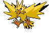
Monate: Jan, Apr, Jul, Okt
Roaming Kanto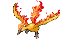
Monate: Feb, Mai, Aug, Nov
Roaming Kanto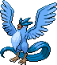
Monate: Mär, Jun, Sep, Dez
Roaming Kanto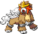
Monate: Jan, Apr, Jul, Okt
Roaming Johto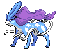
Monate: Feb, Mai, Aug, Nov
Roaming Johto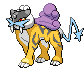
Monate: Mär, Jun, Sep, Dez
Roaming Johto- Shiny-Status wird beim ersten Treffen bestimmt.
- Pro Charakter/Region/Rotation gelten Fangbeschränkungen.
- Status + Trugschlag + Timer Ball sind der Standard-Fangkern.
4. Temporäre Legendäre (KOTH)
Diese Pokémon sind prestige- und kampforientiert, aber nicht dauerhaft sicher.

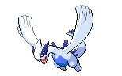
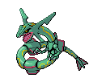
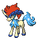
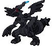
5. Pokédex-Legendäre (dauerhaft)
Diese Gruppe ist an abgeschlossene regionale Pokédexe gebunden und danach als Raid dauerhaft verfügbar.
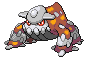
Dauerhaft mit Cooldown.
Pokédex-Raid Sinnoh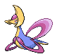
Dauerhaft verfügbar.
Pokédex-Raid Sinnoh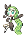
Dauerhaft verfügbar.
Pokédex-Raid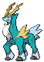
Ritter-Trio.
Pokédex-Raid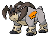
Ritter-Trio.
Pokédex-Raid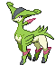
Ritter-Trio.
Pokédex-Raid6. Event- und Raid-Legendäre
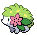
Event-Legendäres; nach Event in der Regel über den GTL handelbar.
Event Sinnoh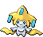
Event-Raid-Legendäres; saisonal im Winter verfügbar.
Event-Raid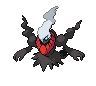
Spezial-Raid-Legendäres; abhängig von Event- und Freischaltungsstand.
Spezial-Raid Event7. Tipps, Tricks und Vorbereitung
- Legendary Lure erhöht die Effizienz bei Roaming-Suchen.
- Repel-Routen mit kurzer Heil-Loop sparen Zeit.
- Status-Setup (Schlaf/Paralyse) + Trugschlag erhöhen die Fangquote stark.
- Für KOTH immer ein PvP-fähiges Team bereithalten.
- GTL-Preise schwanken über den Monat je nach Angebot.
8. Schnellreferenz - Alle Legendären
Ergänzend: Roaming-Kalender und kompakte Zusammenfassung in Guides.